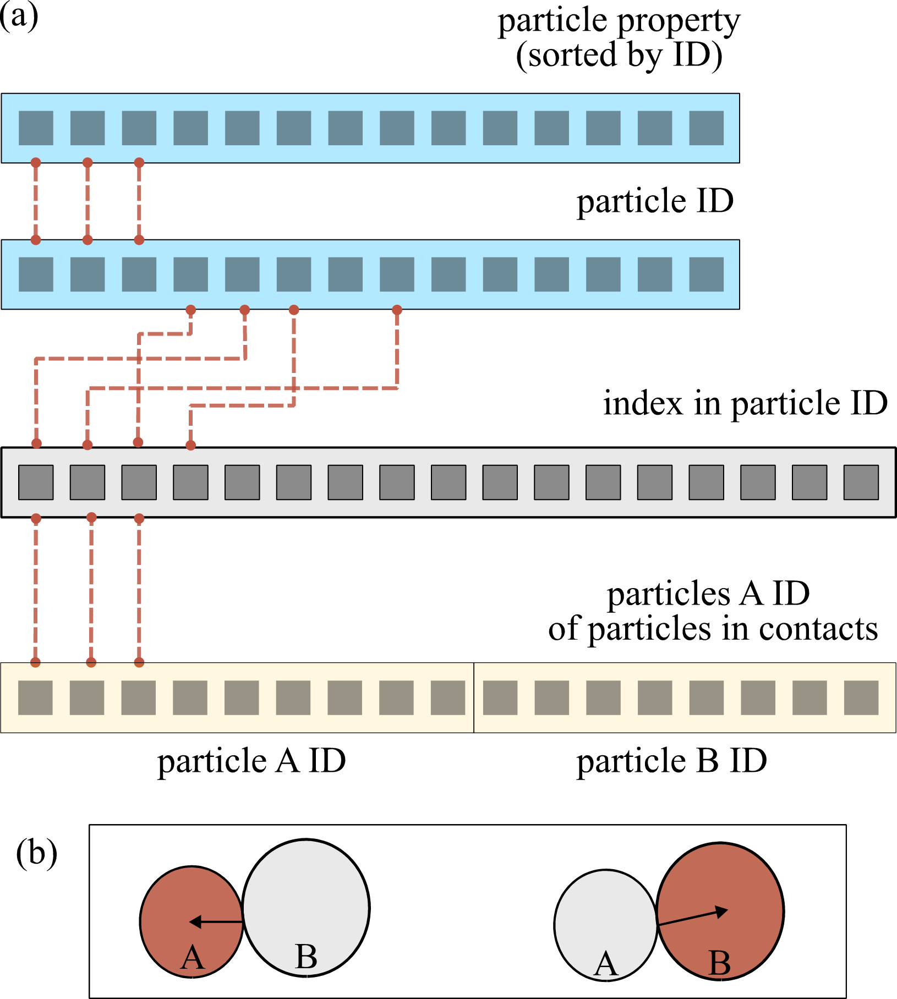

Contacts
pysammos.data_handle.contacts package
Subpackage for handling contact data.
Particle Mapper module
pysammos.data_handle.contacts.particle_mapper module
It is necessary to map the contact data (particle interaction pairs and force) to the particle data (position and diameter), so that the branch vectors of particle interactions can be calculated.
On the one hand, the particle data consists of the following arrays: particle ID, particle diameter, mass, velocity, and position. On the other hand, contact data consists of the following arrays: the particle ID of the particles upon which the contact force is exerted (particles \(A\)), the force acting on particles \(A\), and the particle ID of the particles in contact with particles \(A\) (particles \(B\)).
The arrays containing the contact data are concatenated such that both perspectives of the interaction are accounted for in a single array (i.e., \(A_{con} = \{A, B\}\) and \(B_{con} = \{B, A\}\)).
This allows the Coarse-graining equations to be applied directly to the contact data. Hence, the contact-to-particle data mapping involves associating each element of \(A_{con}\) (and \(B_{con}\)) with the corresponding element in the particle ID array of the particle data (grey array in the Figure below).
{kind=link}

Example of particle mapper. Conceptual diagram illustrating the relationship between the particle data (blue arrays) and contact data (yellow arrays) through the index mapping (grey) array. The grey array maps the indices of the contact data to the particle data, which is sorted by particle ID. The contact data has previously been arranged such that both sides of the interaction are taken into account in a single array, i.e., the effect on particle A, and on particle B (b).
This module provides functionality to map global particle data (positions, diameters, etc.) to contact pair data, duplicates the arrays to account for both directions (A→B and B→A), and computes the branch vectors using either contact points or particle diameters. It also includes options to return particle volumes for fabric tensor calculations.
- It contains one main function:
map_contact_data(): Maps particle and contact data for branch vector and fabric tensor analysis.
Returns positions, forces, branch vectors, center-to-center vectors, and optionally volumes and phases for each contact pair, accounting for both directions of interaction.
- pysammos.data_handle.contacts.particle_mapper.map_contact_data(Global_ID, Position, Diameter, Density, Volume, Particle_LL, Particle_I, Fij, Contact_Points, ModelAxesRanges, AxesPeriodicity, Return_Volume, Particle_Phase_Array_t)[source]
Maps global particle data to contact pair data, duplicates arrays for both interaction directions, and computes branch vectors for fabric tensor analysis.
- Return type:
Tuple[ndarray,ndarray,ndarray,ndarray,Optional[ndarray],Optional[ndarray],float]
Inputs
- Global_IDnp.ndarray, shape (N,)
Array of global particle IDs.
- Positionnp.ndarray, shape (N, 3)
Particle positions.
- Diameternp.ndarray, shape (N,)
Particle diameters.
- Densitynp.ndarray, shape (N,)
Particle densities.
- Volumenp.ndarray, shape (N,)
Particle volumes, used for fabric tensor calculations if Return_Volume is True.
- Particle_LLnp.ndarray, shape (M,)
Arrays of particle IDs involved in contacts.
- Particle_Inp.ndarray, shape (M,)
Arrays of particle IDs involved in contacts.
- Fijnp.ndarray, shape (M, 3)
Contact forces between particle pairs.
- Contact_Pointsnp.ndarray or None, shape (M, 3), optional
Contact points for each interaction, used to compute branch vectors. If None, branch vectors are computed using particle diameters.
- ModelAxesRangesnp.ndarray, shape (3,)
Ranges of the model axes for periodic boundary conditions.
- AxesPeriodicitynp.ndarray of bool, shape (3,)
Indicates which axes are periodic.
- Return_Volumebool
If True, the function returns particle volumes for fabric tensor calculations.
- Particle_Phase_Array_tnp.ndarray or None
Array containing phase information for each particle. If None, phase data is not returned.
Outputs
- Position_LL_dupnp.ndarray, shape (2M, 3)
Positions for each duplicated contact (both A→B and B→A).
- Force_LL_dupnp.ndarray, shape (2M, 3)
Forces for each duplicated contact (both A→B and B→A).
- BranchVector_LL_dupnp.ndarray, shape (2M, 3)
Branch vectors for each duplicated contact (both A→B and B→A).
- CenterToCenterVector_LL_dupnp.ndarray, shape (2M, 3)
Center-to-center vectors for each duplicated contact (both A→B and B→A).
- Volume_LL_dupnp.ndarray or None, shape (2M,)
Duplicated particle volumes if Return_Volume is True, else None.
- Phases_arraynp.ndarray or None, shape (2M,)
Duplicated particle phase data if provided, else None.
Notes
The function assumes that Global_ID is sorted for efficient mapping.
Arrays are duplicated to account for both directions of each contact pair.
Branch vectors are computed using either contact points (if provided) or particle diameters.
Designed for use in granular material simulations and fabric tensor analysis.